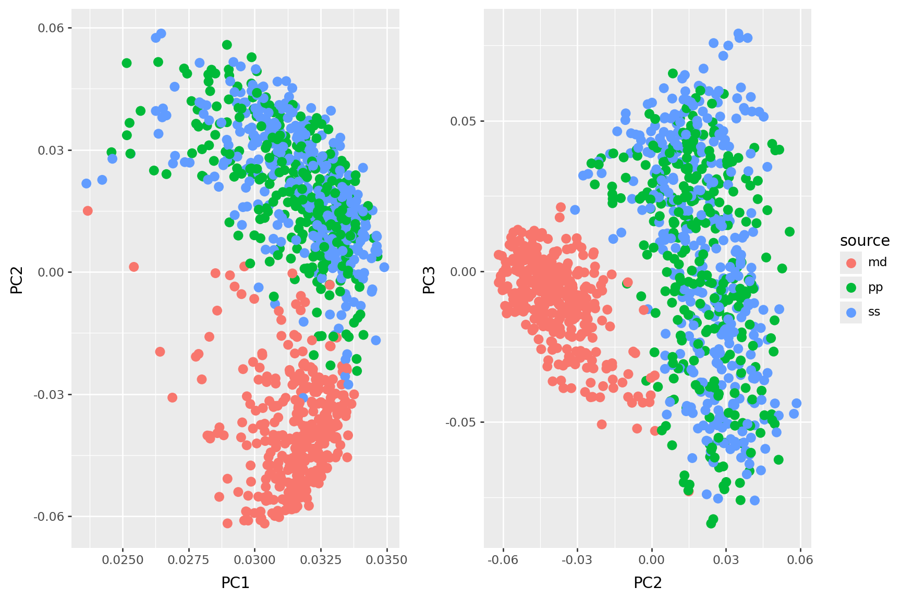
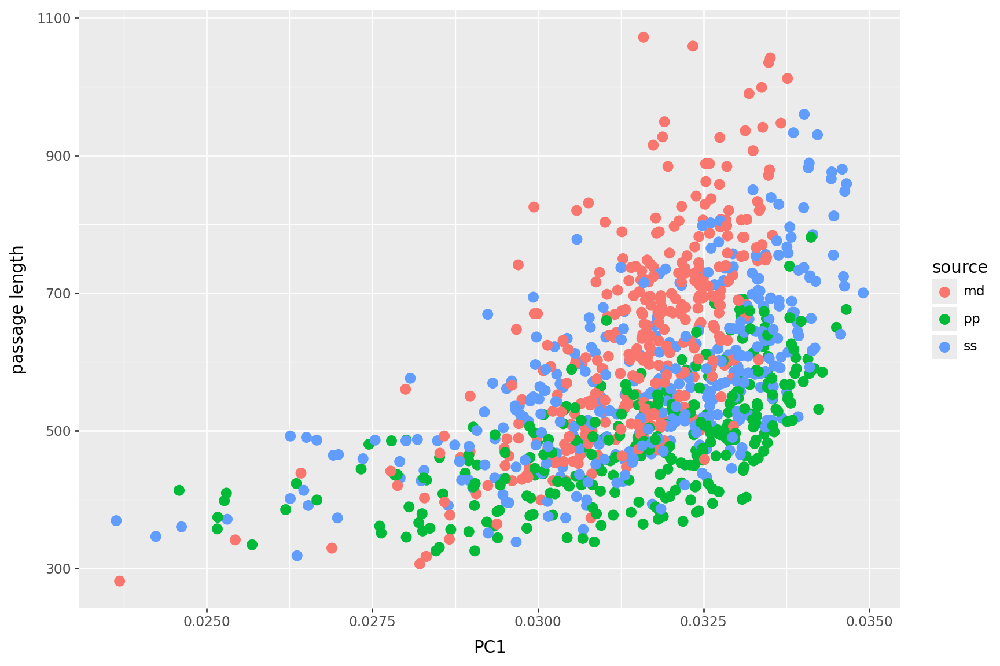
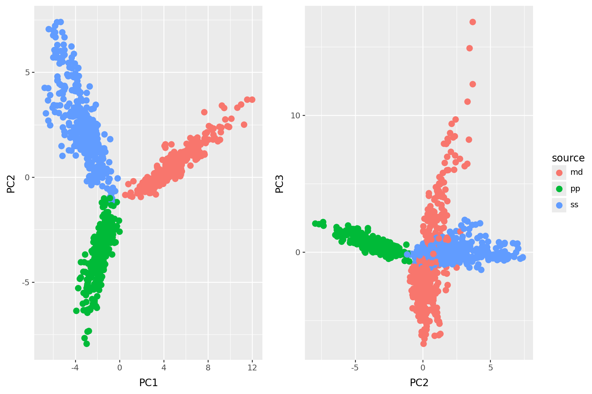

from collections import defaultdict
pfile = open("data/passages.txt", "r")
passages = pfile.read().split("\n")[:-1]
sources = pd.read_table("data/passage_sources.tsv")
words = np.unique(" ".join(passages).split(" "))[1:]
def tabwords(x, words):
d = defaultdict(int)
for w in x.split(" "):
d[w] += 1
out = np.array([d[w] for w in words])
return out
wordmat = np.array([tabwords(x, words) for x in passages])Course Overview
Course Overview
Data Mining, Exploration, and Visualization
Peter Ralph
https://uodsci.github.io/ds435
Steps in data analysis
- Care, or at least think, about the data.
- Look at the data.
- Query the data.
- Check the results.
- Communicate.
In this class:
- I just got this dataset. What is in it, actually?
- Well, that’s messy. Let’s tidy it up.
- Something sure went wrong with those values. Best to ignore them.
- I’ve still just got a giant pile of numbers. How about some pictures?
- My data are 52-dimensional, but I can only draw pictures in 2(ish) dimensions?
- Uh-oh, these data aren’t even numbers, they’re words.
- Uh-oh, these data aren’t even numbers, they’re images.

image: Frank Klausz, woodandshop.com
Exploratory data analysis
It is important to understand what you CAN do before you learn to measure how WELL you seem to have DONE it. (Tukey, Exploratory Data Analysis)
This is particularly important now that the thing you’re doing might be “throw everything into a neural network”.
Exploratory data analysis
Goals:
- To get a sense for what the data represent: how much data? what types of values? what are typical values? what does this imply about how the data were collected?
- To understand the contours of the data: what range of values are represented, with what frequency? are there obvious relationships?
- To identify potentially problematic aspects: errors? outliers? strong confounding?
- To intuit how the data can be used to answer the question(s) at hand: where are the sources of information? what confounding relationships need to be considered?
- To propose transformations or adjustments that might help.
For instance:
- This was a survey of 200 third-graders at two different schools.
- Most of the observations have some missing measurements.
- Temperature changes seasonally.
- Most activity happens between 6pm and 8pm.
Tools already in your belt:
- looking at the raw numbers in a text file (yes!!!)
- tables of counts
- means and medians and IQRs and so forth
- histograms and boxplots and violinplots
- scatterplots (all-pairwise! with colors!)
- residuals from quick and simple linear models
- doing PCA
Basically:
First, look at the data.
Structure of the course
Let’s have a look at the course webpage: https://uodsci.github.io/ds435
How to get the course material:
You probably want to have the content locally. Suggested workflow to avoid merge conflicts:
- clone the git repository (at https://github.com/uodsci/ds435)
- find the slides in
docs/slides/1 - do not open my
.ipynbfiles! - instead: copy them (e.g., to
introduction-mine.ipynb) to a new file in the same directory, and open/edit that version - update simply by doing
git pull
This will give you a low-stakes chance to get used to git when inevitably things get messed up.
Exploring words: a preview
Text analysis
In data/passages.txt we have a number of short passages from a few different books. What distinguishes the passages? The books?
The sources of the passages are in data/passage_sources.tsv.
What’s going to happen: \[ \text{text} \rightarrow \text{big matrix} \rightarrow \text{data frame of features} \] The second arrow is ordination or dimension reduction, via PCA. We’ll be looking at lots of ways to do this.
Turn the data into a matrix
passages[1]'elinor encouraged her as much as possible to talk of what she felt and before breakfast was ready they had gone through the subject again and again and with the same steady conviction and affectionate counsel on elinors side the same impetuous feelings and varying opinions on mariannes as before sometimes she could believe willoughby to be as unfortunate and as innocent as herself and at others lost every consolation in the impossibility of acquitting him at one moment she was absolutely indifferent to the observation of all the world at another she would seclude herself from it for ever and at a third could resist it with energy in one thing however she was uniform when it came to the point in avoiding where it was possible the presence of mrs jennings and in a determined silence when obliged to endure it jenningss entering into her sorrows with any compassion her kindness is not sympathy her goodnature is not tenderness all that she wants is gossip and she only likes me now because i supply it elinor had not needed this to be assured of the injustice to which her sister was often led in her opinion of others by the irritable refinement of her own mind and the too great importance placed by her on the delicacies of a strong sensibility and the graces of a polished manner like half the rest of the world if more than half there be that are clever and good marianne with excellent abilities and an excellent disposition was neither reasonable nor candid she expected from other people the same opinions and feelings as her own and she judged of their motives by the immediate effect of their actions on herself thus a circumstance occurred while the sisters were together in their own room after breakfast which sunk the heart of mrs jennings still lower in her estimation because through her own weakness it chanced to prove a source of fresh pain to herself though mrs jennings was governed in it by an impulse of the utmost goodwill with a letter in her outstretched hand and countenance gaily smiling from the persuasion of bringing comfort she entered their room saying now my dear i bring you something that i am sure will do you good in one moment her imagination placed before her a letter from willoughby full of tenderness and contrition explanatory of all that had passed satisfactory convincing and instantly followed by willoughby himself rushing eagerly into the room to inforce at her feet by the eloquence of his eyes the assurances of his letter the hand writing of her mother never till then unwelcome was before her and in the acuteness of the disappointment which followed such an ecstasy of more than hope she felt as if till that instant she had never suffered jennings no language within her reach in her moments of happiest eloquence could have expressed and now she could reproach her only by the tears which streamed from her eyes with passionate violencea reproach however so entirely lost on its object that after many expressions of pity she withdrew still referring her to the letter of comfort but the letter when she was calm enough to read it brought little comfort her mother still confident of their engagement and relying as warmly as ever on his constancy had only been roused by elinors application to intreat from marianne greater openness towards them both and this with such tenderness towards her such affection for willoughby and such a conviction of their future happiness in each other that she wept with agony through the whole of it'for w, x in zip(words[:20], wordmat[:20,:].T):
print(f"{w}: {x}")a: [15 9 12 8 7 7 5 12 8 3 18 12 13 11 2 2 12 14 11 14]
aback: [0 0 0 0 0 0 0 0 0 0 0 0 0 0 0 0 0 0 0 0]
abaft: [0 0 0 0 0 0 0 0 0 0 0 0 0 0 0 0 0 0 0 0]
abandon: [0 0 0 0 0 0 0 0 0 0 0 0 0 0 0 0 0 0 0 0]
abandoned: [0 0 0 0 0 0 0 0 0 0 0 0 0 0 0 0 0 0 0 0]
abandonment: [0 0 0 0 0 1 0 0 0 0 0 0 0 0 0 0 0 0 0 0]
abased: [0 0 0 0 0 0 0 0 0 0 0 0 0 0 0 0 0 0 0 0]
abasement: [0 0 0 0 0 0 0 0 0 0 0 0 0 0 0 0 0 0 0 0]
abashed: [0 0 0 0 0 0 0 0 0 0 0 0 0 0 0 0 0 0 0 0]
abate: [0 0 0 0 0 0 0 0 0 0 0 0 0 0 0 0 0 0 0 0]
abated: [0 0 0 0 0 0 0 0 0 0 0 0 0 0 0 0 0 0 0 0]
abatement: [0 0 0 0 0 0 0 0 0 0 0 0 0 0 0 0 0 0 0 0]
abating: [0 0 0 0 0 0 0 0 0 0 0 0 0 0 0 0 0 0 0 0]
abbeyland: [0 0 0 0 0 0 0 0 0 0 0 0 0 0 0 0 0 0 0 0]
abbreviate: [0 0 0 0 0 0 0 0 0 0 0 0 0 0 0 0 0 0 0 0]
abbreviation: [0 0 0 0 0 0 0 0 0 0 0 0 0 0 0 0 0 0 0 0]
abeam: [0 0 0 0 0 0 0 0 0 0 0 0 0 0 0 0 0 0 0 0]
abednego: [0 0 0 0 0 0 0 0 0 0 0 0 0 0 0 0 0 0 0 0]
abhor: [0 0 0 0 0 0 0 0 0 0 0 0 0 0 0 0 0 0 0 0]
abhorred: [0 0 0 0 0 0 0 0 0 0 0 0 0 0 0 0 0 0 0 0]wordmat.shape(1000, 19224)PCA
We will “do PCA” here by hand, by finding the singular value decomposition (SVD) of the data matrix.
(And: note the standardization!)
from scipy.sparse.linalg import svds
# center and scale the data
x = wordmat - np.mean(wordmat, axis=1)[:,np.newaxis]
x /= np.std(x, axis=1)[:, np.newaxis]
pcs, evals, evecs = svds(x, k=3)
eord = np.argsort(evals)[::-1]
evals = evals[eord]
evecs = evecs[eord,:]
pcs = pcs[:,eord]The loadings
loadings = pd.DataFrame(evecs.T, columns=[f"PC{k}" for k in range(1,4)], index=words)
loadings| PC1 | PC2 | PC3 | |
|---|---|---|---|
| a | 0.200405 | -0.037541 | -0.055637 |
| aback | -0.000536 | -0.000239 | 0.000244 |
| abaft | -0.000554 | -0.000167 | 0.000109 |
| abandon | -0.000514 | -0.000292 | -0.000012 |
| abandoned | -0.000394 | -0.000976 | 0.000132 |
| ... | ... | ... | ... |
| zephyr | -0.000553 | -0.000176 | 0.000067 |
| zodiac | -0.000460 | -0.000522 | -0.000393 |
| zone | -0.000406 | -0.000765 | -0.000035 |
| zones | -0.000505 | -0.000423 | -0.000012 |
| zoroaster | -0.000543 | -0.000196 | 0.000136 |
19224 rows × 3 columns
The PCs
pcdf = pd.concat([pd.DataFrame({"PC"+str(k+1) : pcs[:,k] for k in range(pcs.shape[1])}), sources], axis=1)
pcdf| PC1 | PC2 | PC3 | source | nchar | |
|---|---|---|---|---|---|
| 0 | 0.031581 | -0.043804 | -0.018233 | md | 3665 |
| 1 | 0.032876 | 0.005134 | 0.050745 | ss | 3499 |
| 2 | 0.032161 | -0.031837 | -0.029582 | md | 3200 |
| 3 | 0.029784 | 0.035067 | 0.078935 | ss | 3056 |
| 4 | 0.031310 | 0.041451 | -0.018352 | ss | 2485 |
| ... | ... | ... | ... | ... | ... |
| 995 | 0.030151 | 0.027636 | -0.027091 | ss | 2554 |
| 996 | 0.031746 | -0.009418 | -0.034076 | md | 2775 |
| 997 | 0.032391 | 0.014868 | -0.014404 | pp | 2017 |
| 998 | 0.031291 | 0.040022 | 0.039081 | ss | 3494 |
| 999 | 0.030256 | 0.035791 | -0.005728 | pp | 2192 |
1000 rows × 5 columns
p1 = p9.ggplot(pcdf, p9.aes(x="PC1", y="PC2", color="source")) + p9.geom_point(size=3, show_legend=False)
p2 = p9.ggplot(pcdf, p9.aes(x="PC2", y="PC3", color="source")) + p9.geom_point(size=3)
p1 | p2
PC 1 is length
pcdf['lengths'] = np.sum(wordmat, axis=1)
p9.ggplot(pcdf, p9.aes(x="PC1", y="lengths", color="source")) + p9.geom_point(size=3) + p9.labs(x="PC1", y="passage length")
PC2 is book
loadings.sort_values("PC2").head(20)| PC1 | PC2 | PC3 | |
|---|---|---|---|
| the | 0.523547 | -0.652591 | 0.022868 |
| whale | 0.014152 | -0.069795 | -0.026534 |
| in | 0.196969 | -0.053266 | -0.005499 |
| this | 0.047997 | -0.042451 | -0.052062 |
| a | 0.200405 | -0.037541 | -0.055637 |
| like | 0.014690 | -0.035441 | -0.017307 |
| upon | 0.016007 | -0.035191 | -0.028701 |
| ahab | 0.006510 | -0.032928 | -0.007920 |
| sea | 0.006046 | -0.031019 | -0.006752 |
| ship | 0.005879 | -0.028600 | -0.006917 |
| his | 0.120435 | -0.028370 | 0.009677 |
| old | 0.008500 | -0.027787 | -0.017462 |
| whales | 0.005390 | -0.027329 | -0.010196 |
| one | 0.033698 | -0.027119 | -0.037192 |
| into | 0.018128 | -0.025168 | -0.007119 |
| now | 0.024838 | -0.022074 | -0.015997 |
| these | 0.010246 | -0.021112 | -0.008600 |
| of | 0.347599 | -0.020880 | 0.089325 |
| boat | 0.003445 | -0.020078 | -0.001117 |
| white | 0.003848 | -0.019542 | -0.005490 |
loadings.sort_values("PC2").tail(20)| PC1 | PC2 | PC3 | |
|---|---|---|---|
| me | 0.030992 | 0.046881 | -0.137308 |
| would | 0.038035 | 0.047110 | -0.013667 |
| he | 0.101428 | 0.047711 | -0.022485 |
| elinor | 0.019032 | 0.050489 | 0.023545 |
| very | 0.033219 | 0.052090 | -0.018889 |
| your | 0.025251 | 0.054792 | -0.116548 |
| for | 0.100339 | 0.057560 | -0.043023 |
| could | 0.038412 | 0.070246 | 0.058351 |
| it | 0.130834 | 0.071298 | -0.134508 |
| have | 0.060876 | 0.078142 | -0.118018 |
| my | 0.047833 | 0.089361 | -0.194434 |
| had | 0.082233 | 0.094667 | 0.110598 |
| was | 0.141180 | 0.130879 | 0.204603 |
| be | 0.093912 | 0.131226 | -0.075934 |
| not | 0.098052 | 0.131523 | -0.062419 |
| you | 0.076411 | 0.150797 | -0.331023 |
| she | 0.104468 | 0.248379 | 0.239013 |
| i | 0.132836 | 0.256586 | -0.532524 |
| to | 0.335033 | 0.311159 | 0.019167 |
| her | 0.160492 | 0.355002 | 0.462193 |
PC3?
loadings.sort_values("PC3").head(20)| PC1 | PC2 | PC3 | |
|---|---|---|---|
| i | 0.132836 | 0.256586 | -0.532524 |
| you | 0.076411 | 0.150797 | -0.331023 |
| my | 0.047833 | 0.089361 | -0.194434 |
| is | 0.065981 | -0.015494 | -0.170012 |
| me | 0.030992 | 0.046881 | -0.137308 |
| it | 0.130834 | 0.071298 | -0.134508 |
| have | 0.060876 | 0.078142 | -0.118018 |
| your | 0.025251 | 0.054792 | -0.116548 |
| that | 0.142322 | 0.020713 | -0.103028 |
| be | 0.093912 | 0.131226 | -0.075934 |
| but | 0.081493 | 0.014145 | -0.075810 |
| will | 0.025469 | 0.030832 | -0.075157 |
| are | 0.023219 | -0.004333 | -0.066721 |
| if | 0.028036 | 0.019286 | -0.064901 |
| not | 0.098052 | 0.131523 | -0.062419 |
| am | 0.015088 | 0.041852 | -0.060722 |
| do | 0.020977 | 0.035387 | -0.059673 |
| can | 0.014108 | 0.016091 | -0.056266 |
| a | 0.200405 | -0.037541 | -0.055637 |
| this | 0.047997 | -0.042451 | -0.052062 |
loadings.sort_values("PC3").tail(20)| PC1 | PC2 | PC3 | |
|---|---|---|---|
| mother | 0.010312 | 0.025910 | 0.021928 |
| them | 0.037627 | 0.026889 | 0.022182 |
| the | 0.523547 | -0.652591 | 0.022868 |
| elinor | 0.019032 | 0.050489 | 0.023545 |
| they | 0.045059 | 0.018149 | 0.024460 |
| every | 0.022388 | 0.019543 | 0.028844 |
| mrs | 0.012199 | 0.028403 | 0.031719 |
| marianne | 0.013762 | 0.034782 | 0.033626 |
| which | 0.049184 | 0.029560 | 0.034382 |
| by | 0.064756 | 0.005060 | 0.034632 |
| were | 0.042672 | 0.005147 | 0.043909 |
| herself | 0.016034 | 0.036806 | 0.055770 |
| could | 0.038412 | 0.070246 | 0.058351 |
| their | 0.041101 | 0.003621 | 0.065769 |
| of | 0.347599 | -0.020880 | 0.089325 |
| and | 0.331271 | 0.025959 | 0.091769 |
| had | 0.082233 | 0.094667 | 0.110598 |
| was | 0.141180 | 0.130879 | 0.204603 |
| she | 0.104468 | 0.248379 | 0.239013 |
| her | 0.160492 | 0.355002 | 0.462193 |
This is also “PCA”:
from sklearn.feature_extraction.text import CountVectorizer
from sklearn.decomposition import PCA
vectorizer = CountVectorizer(stop_words='english', min_df=5)
X = vectorizer.fit_transform(passages)
pca = PCA(n_components=3)
coords = pca.fit_transform(X.toarray())
pcdf2 = pd.concat([pd.DataFrame({"PC"+str(k+1) : coords[:,k] for k in range(coords.shape[1])}), sources], axis=1)
pcdf2| PC1 | PC2 | PC3 | source | nchar | |
|---|---|---|---|---|---|
| 0 | 6.817707 | 1.807246 | 6.965579 | md | 3665 |
| 1 | -2.959877 | 3.321164 | -0.636748 | ss | 3499 |
| 2 | 4.279244 | 0.542435 | 1.842433 | md | 3200 |
| 3 | -3.419782 | 2.218719 | 0.430876 | ss | 3056 |
| 4 | -2.326584 | 1.583373 | -0.262377 | ss | 2485 |
| ... | ... | ... | ... | ... | ... |
| 995 | -2.274159 | 1.274871 | -0.288355 | ss | 2554 |
| 996 | 2.027344 | -0.458189 | -2.449384 | md | 2775 |
| 997 | -1.029721 | -1.667314 | 0.037950 | pp | 2017 |
| 998 | -5.099969 | 5.770187 | 0.478246 | ss | 3494 |
| 999 | -1.408782 | -3.446449 | 0.031360 | pp | 2192 |
1000 rows × 5 columns

Footnotes
these are generated from the files in slides/, confusingly↩︎